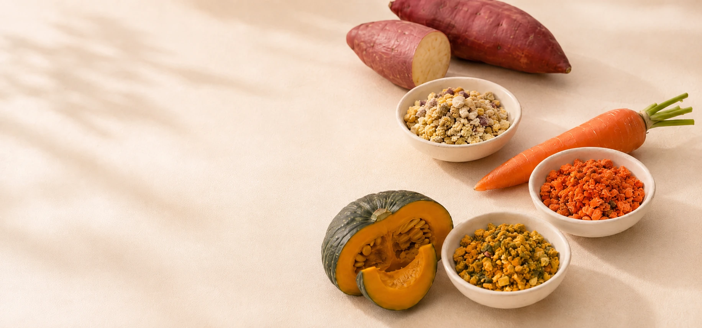
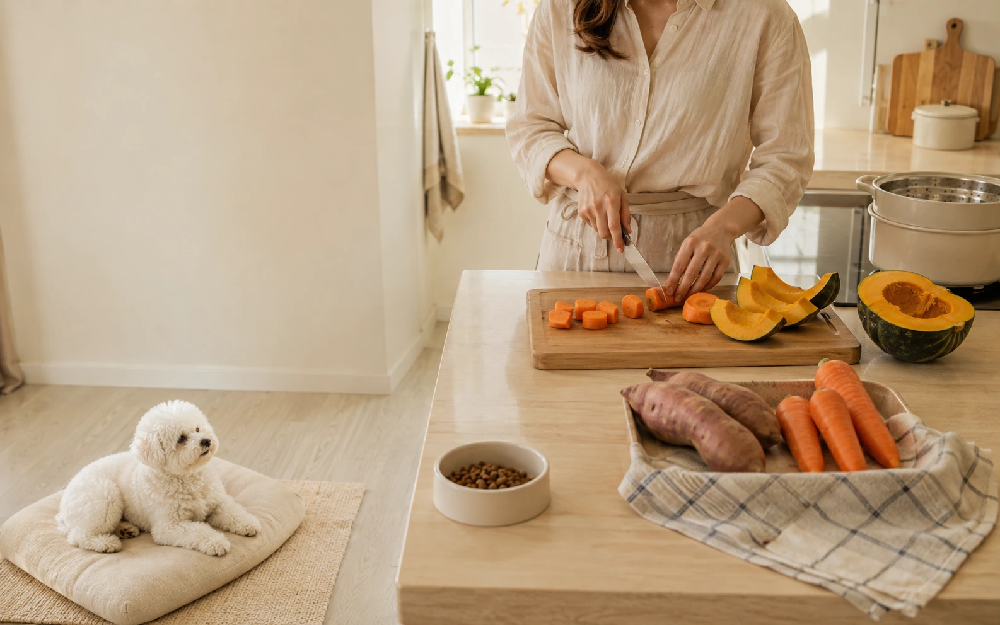

익숙하고 이름을 아는 식재료에서 시작합니다.

OUR FOOD
좋은 재료를 고르고,
먹기 좋은 방법을 고민합니다.
반려견에게 챙겨주는 음식이니까,
고구마·당근·단호박처럼 익숙한 국내산 야채에서 시작합니다.
원료마다 다른 맛과 향, 색과 식감을 살피며 매일 더하기 좋은 작은 입자로 만듭니다.

FROM CARE TO EVERYDAY FOOD
좋은 것을 챙겨주고 싶은 마음.
신선한 야채를 고르고, 씻고, 손질하고, 익히는 일. 반려견의 건강을 생각하는 마음이 있기에 가능한 정성입니다. PETSRO는 그 마음을 존중하면서, 매일 이어가기 조금 더 쉬운 방법을 고민했습니다.
매일 준비하는 정성을, 조금 더 간편하게.OUR INGREDIENTS
이름을 알고,
눈으로 확인할 수 있는 재료.
PETSRO는 고구마·당근·단호박처럼 보호자에게도 익숙한 국내산 야채를 사용합니다. 야채마다 다른 색과 향, 식감이 제품에도 자연스럽게 드러나며, 평소 식사에 식물성 식재료와 야채 원료가 가진 식이섬유를 더할 수 있습니다.
평소 식사에 야채 원료와 식이섬유를 더합니다.
원료와 공정에 집중해 간결하게 만들었습니다.
ONE VEGETABLE AT A TIME
한 통에 하나의 야채,
선택은 더 분명하게.
여러 야채를 한 번에 섞기보다 고구마·당근·단호박을 각각 만들었습니다. 오늘은 어떤 야채를 더할지 고를 수 있고, 무엇을 먹이는지도 한눈에 알 수 있습니다.
Sweet Potato
고구마
Carrot
당근
Kabocha
단호박
MADE WITH CARE
좋은 재료일수록,
다루는 과정도 세심하게.
원료를 고르고, 증숙하고, 낮은 온도에서 천천히 열풍 건조한 뒤 고온 열처리합니다. 단순히 잘게 갈아내는 데 그치지 않고, 야채의 색과 모양이 느껴지는 작은 입자로 마무리합니다.
- 01 원료 선별 Ingredient Selection
- 02 증숙 Steaming
- 03 저온 열풍 건조 Low-Temperature Hot-Air Drying
- 04 고온 열처리 Heat Treatment
- 05 작은 입자화 Small-Particle Processing
TEXTURE
뿌리기는 쉽고, 야채의 존재감은 남도록.
고운 가루로만 만들기보다 크기가 다른 작은 입자가 자연스럽게 섞이도록 가공했습니다. 원료마다 다른 색과 입자가 보여, 어떤 야채를 더하는지 눈으로도 느낄 수 있습니다.
제품 관련 야채 토퍼 제조방법 특허출원 중
대한민국 특허출원 제10-2025-0161849호
EVERYDAY
정성은 남기고,
준비는 가볍게.
매번 야채를 씻고 손질하고 익혀 보관하지 않아도 됩니다. 필요할 때 열고, 필요한 만큼 덜어, 평소 사료 위에 더하면 됩니다. 좋은 식재료를 챙기고 싶은 마음이 바쁜 일상에서도 이어질 수 있도록 만들었습니다.
필요할 때 용기를 엽니다.
먹일 만큼 가볍게 덜어냅니다.
평소 사료 위에 간편하게 더합니다.
PETSRO FOOD PHILOSOPHY
먹는 즐거움과 건강을
함께 담다.
PETSRO는 반려견이 즐겁게 먹는 것과, 보호자가 무엇을 먹이는지 알고 선택하는 일을 함께 생각합니다. 좋은 재료, 정성스러운 과정, 매일 쓰기 쉬운 형태. 우리가 음식에 담고 싶은 기준입니다.
좋은 재료에서 시작해, 매일의 식사까지.